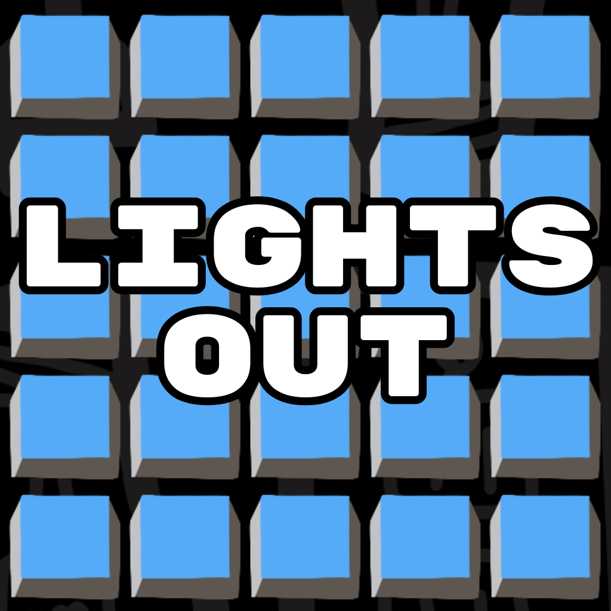
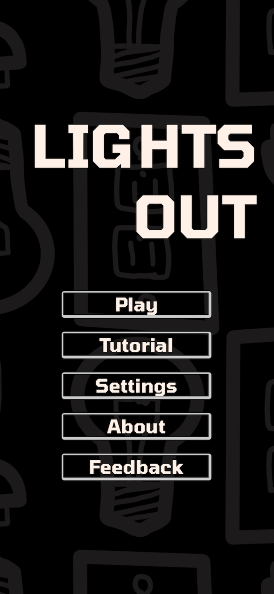
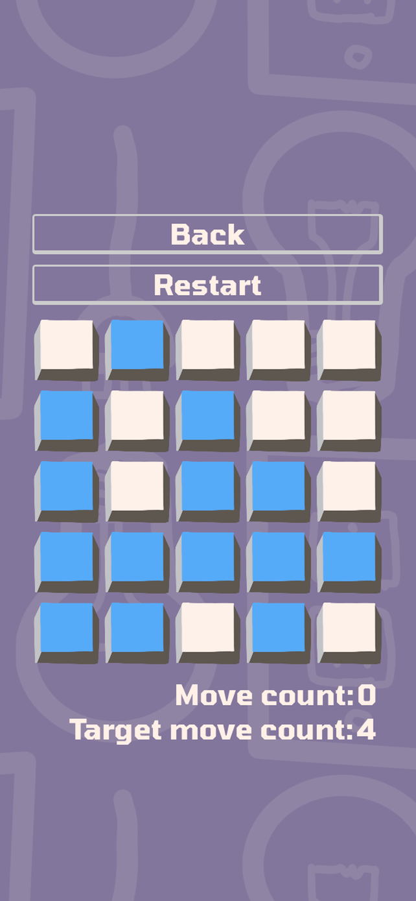

Lights Out
Updated



Lights out is a mobile recreation of a classic puzzle game played on a 5x5 grid of lights.
It was made with the Godot engine (link).
I updated this game in 2026, porting it from Godot 3.X to Godot 4.X, revamping the visuals, and removing ads.
| Status | Released |
|---|---|
| Author | mikepurdy |
| Genre | Puzzle |
| Made with | Godot |
| Tags | Casual, Godot, mobile, Singleplayer |
| Content | No generative AI was used |